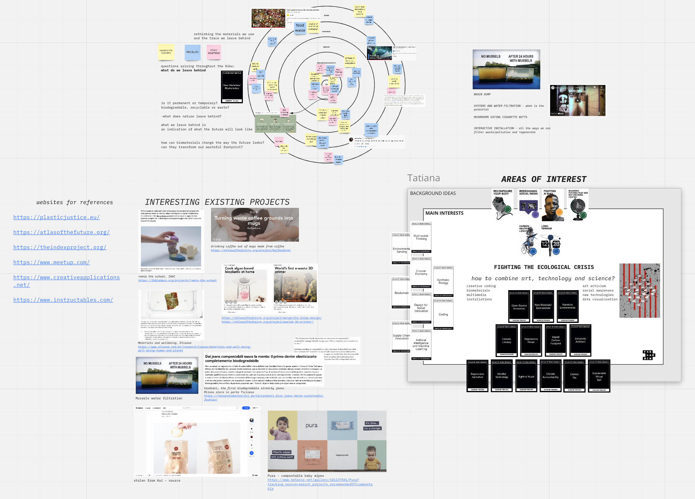

This week focused on what our ideas are. Through different activities and exercises, we were required to take note of all the things that came to mind, whether they be good or bad, interesting or not. Mariana gave us a Miro board on which we had to reflect and connect different topics, questions and problems. We began to choose and define “weak signals”, or rather, the paths with potential that we wanted to pursue. Weak signals that immediately resonated with me were Carbon Neutral Lifestyle, Climate Conscience, Biomaterials, Regenerative Design, Coding and Synthetic Biology. I also knew that I wanted to expand my skills in the field of creative coding, multimedia interactive installations, biology and general programming.
Slowly, I began realizing that the problem I wanted to tackle was the Ecological crisis, and the way I wanted to confront it was through the intersection of Art, Science and Technology. The weak signal which I decided to focus on was Biomaterials.
The Weak signal that I chose.
My areas of interest.
The way this relates to my poster from last week is quite evident: my poster pointed out the plastic crisis we are facing, with microplastics being found in almost anything. By shifting our focus away from traditional plastics and instead finding new, less dangerous and less permanent materials, I believe that this problem could be confronted. This being said, I do think that the notion of consuming to solve overconsumption problems is a problem in itself and that we need a shift in consumer mindset, but that may be the topic for another day.
On Wednesday, our activity was a hike around the Collserola Natural Park. The objective was to move from our homes, to the city, then from the city, to the top of the mountain, where we would have a view extending beyond Barcelona. Like this, we would be able to see the city from a distance and reflect on our selected weak signal from these different perspectives. As I walked up the hills, I began observing different things that caught my eye. When looking down at my feet, making sure not to slide or trip on any rocks, what particularly struck me were the things left behind by other hikers. I began to notice a mixture of plastic food wrappers, food waste, empty aluminium energy drinks, face masks and shoe prints. I took photos of all these elements, and began to interrogate myself on the nature of them:
What do we leave behind: is it permanent or temporary?
Is it biodegradable, recyclable or just waste?
What does nature leave behind?
How is nature’s debris different from human’s debris?
What we leave behind is an indication of what the future will look like.
This led me to wonder how biomaterials can change the way the future looks. Can they transform our wasteful footprint?
On my way back home from the hike, taking the metro and walking through the city streets, I noticed the phenomenon of human waste was amplified. The closer to the city I got, the more people there were and the more waste was left behind. The cigarette butts, shopping receipts, the food wrappers, the plastic containers were everywhere. There was more “permanent” waste, which could not biodegrade nor be recycled.
Images from the walk back home from the hike.
I began building my design space around the concept of waste, and what can be done with it. What type of waste is “permanent” and what kind is “temporary” and the implications that both of those come with. I contemplated the issue of permanent waste on different scales and in different contexts, trying to see where New Materials or Biomaterials could solve certain problems. I also searched for interesting projects repurposing waste, filtering pollution or trying to invent products that avoid it altogether.

The overview of my design space
The projects which inspired me the most were experiments on Mussels and microplastic water filtration and Mushrooms being trained to eat cigarette butts. Although not strictly related to bio materials, I thought both projects could have a lot of potential when it comes to cleaning up the excess amount of waste we currently have. What amused me about these two projects was the way the mushrooms or mussels seemed to be referred to as an algorithm “trained” to solve a certain problem at hand. It made me realise that due to the current heavy presence and value of technology, we tend to associate fascinating natural processes to machine-like behaviour.
Multiscalar Diagram. “Self to world” exercise: thinking of my theme on different scales, highlighting questions, problems and solutions.
Interesting existing projects which inspired me.
Once our personal design space was defined, we had to mingle our ideas and research with people who had similar interests to ours. We created a common design space, revolving around the topic of Post-consumer. Our goal was to come up with as many ideas as possible and link them together. More perspectives reflecting on the same topic meant that we could come up with new ideas and connections.
So we began talking about our personal interests, then went through each other’s board to see what topics interested us the most, putting the most relevant ideas and post-its on the common board. We also defined the broad topic better by posing the question “What happens after a product’s lifestyle?”. Once we had a base, we began adding more material and connecting everything together until we had a giant web of ideas related to the post-consumer topic.
Collaborative design space.
This exercise highlighted how many core ideas we shared, despite us having different approaches or project ideas. It made me feel like I was surrounded by peers who understood me and who could help me out with their own set of skills. Although it was interesting to hear other people’s ideas and interests, it didn’t necessarily make me think differently of my own path. It simply showed me that I have a community of like-minded people ready to help me with my project.
Based on the work we’ve done this week, I can definitely say that I am eager to start learning more about the topic of Synthetic Biology, New Materials, Waste recycling and more. I would like to experiment with water filtering systems, testing out how mussels filter waste and what exactly happens to that waste. In addition to this, I would also like to try making bioplastics, and add those new skills to my personal development plan, given that I have never created biomaterials before.
As for who I would like to contact, I think it could be beneficial for me to speak with companies in the biomaterials industry to understand what the product pipeline looks like. I would also like to speak to Emily Whyman, who wrote a comprehensive FabLab article on Biomaterials. Until then, I will look forward to next week’s class, Bio & Agri Zero.